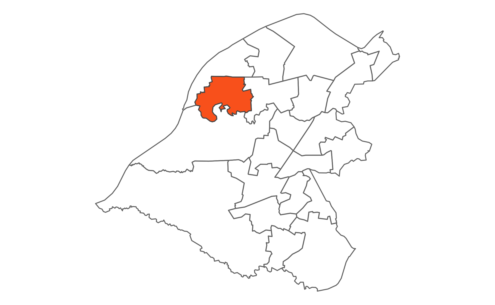

 Flixton is bounded by the Mersey Valley and the River Mersey to the south and is traversed by the Manchester to Liverpool railway line. Its population is concentrated in areas in the northern half of the ward; other areas are generally open and include two golf courses (William Wroe and Flixton Golf Course).